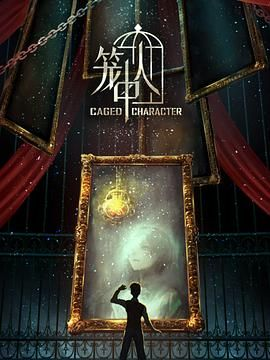
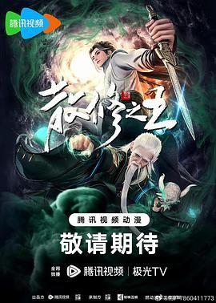

收藏下载分享
类型：奇幻 / 冒险 / 动作地区：大陆年份：2025
导演：李豪凌
演员：赵爽 / 钱琛 / 常文涛 / 张福正 / 杨凯祺 / 魏超 / 陈张太康 / 刘校妤 / 谷江山 / 锦鲤
线路1 线路2 线路3
这是一个由人们的信赖造就英雄的世界，而获得最多信赖的英雄被誉为一一 X 。在这个世界里，人们的信赖是可以被数据统计出来的，并且这些数值会反映在每个人的手腕上。只要获得足够多的信赖值，普通人也能拥有超能力，成为拯救世界的超级英雄。然而，持续变化的信赖值让英雄之路充满未知．...
第7集
第24集完结
第119集
 第16集完结
 第52集完结
确定